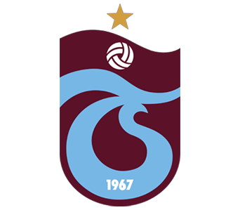
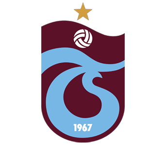

0542 123 63 10
simulasyonrobotic@hotmail.com
Zeytinli Mh. 611. 3 Sk. No:4/M Edremit/BALIKESİR
Simülatörler %100 yerli üretim olup kurulum aşamasından sonra bakım, tamir, çevrim içi bağlantı seçenekleri ile 7x24 teknik destek sağlanmaktadır. Firmamız ürünlerin satışı sonrasında da yedek parça tedarik ve temini aşamalarında kolaylık sunmaktadır.
Simulasyon robotic firması, çeşitli endüstri dallarında kullanılan gelişmiş teknolojik aletlerin yüksek kaliteli ve performanslı simulatör üretmektedir. Eğitim, eğlence, sağlık, havacılık, savaş, gemi ve uzay endüstrisinde kullanılan birçok aracın simülatörü günümüzde kullanılmaktadır. Simülatörlere önceden yüklenmiş senaryolar sayesinde iş güvenliği maksimum düzeye çıkmaktadır. Yürümüş teknolojiler kullanım amacına göre 360 derece ve 20 farklı hareket yeteneği ile gerçekçi bir yaşam deneyimi sunulmaktadır.
Simülatörler %100 yerli üretim olup kurulum aşamasından sonra bakım, tamir, çevrim içi bağlantı seçenekleri ile 7x24 teknik destek sağlanmaktadır. Firmamız ürünlerin satışı sonrasında da yedek parça tedarik ve temini aşamalarında kolaylık sunmaktadır.
Simulasyon robotic firmasının ürettiği simulatörlerin özellikleri arasında; gerçekçi fiziksel etkileşimler, hassas dokunmatik kontroller, benzersiz görsel efektler, gelişmiş sensör teknolojisi ve kişiselleştirilebilir özellikler bulunmaktadır. Bu özellikler sayesinde, kullanıcılar gerçek hayattaki deneyimlere büyük ölçüde yakın bir deneyim yaşayabilmektedirler. Firmamız, gelişmiş teknolojisi sayesinde müşterilerimizin ihtiyaçlarına göre özel tasarımlar yapabilme kapasitesine sahip bir şirkettir. Bu sayede, müşterilerin ihtiyaçlarına en uygun ve özelleştirilmiş simulatörler üretilebilmektedir.
Simülatörler %100 yerli üretim olup kurulum aşamasından sonra bakım, tamir, çevrim içi bağlantı seçenekleri ile 7x24 teknik destek sağlanmaktadır. Firmamız ürünlerin satışı sonrasında da yedek parça tedarik ve temini aşamalarında kolaylık sunmaktadır.

 

Robotic Simulator firması tehlikesiz bir şekilde gökyüzünde süzülmeyi, korkusuz bir şekilde sürat yapmayı ve hareketli bir şekilde 3d video izletmeyi ilke edinmektedir
Piyasaya yüksek kaliteli ve güvenli simülatörler üretmek için saygın tedarikçiler ve ortaklarla çalışıyoruz.

I. Bir yıllık yedek parça II.İlk bakım hizmeti III. Ömür boyu uzaktan kumanda ile çevrim içi destek hizmeti IV. 7/24 çözüm hizmeti
Yazı lazım
0542 123 63 10
simulasyonrobotic@hotmail.com
Zeytinli Mh. 611. 3 Sk. No:4/M Edremit/BALIKESİR